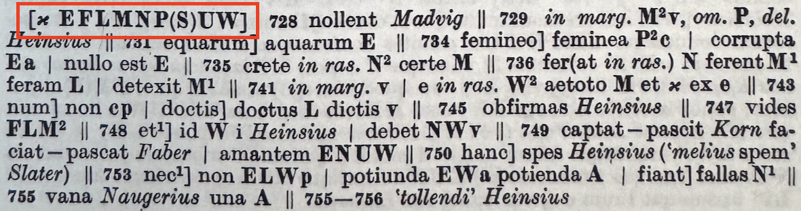

Hugh Cayless, Duke University Libraries
et pete quod fas est, et ama quod femina debes.
spes est quae capiat, spes est quae pascat amorem;
hanc tibi res adimit. non te custodia caro
749 del. Heinsius capiat] faciat (cf. 1. 469) χ, fort. recte pascat ϕ: -it Ω amorem] -ntem NU P (Tarrant, OCT 2004)
749 captat – pascit Korn faciat – pascat Faber | amantem ENUW (Anderson, Teubner 1991)
It is hope that may seize love, it is hope that may nourish it.
Instead of drawing on Chaucer, the P1 discussion used a made-up example:
TEXT A: The quick brown fox jumped over the lazy dog.
TEXT B: The silver wolf jumped over the lazy dog.
TEXT C: A quick brown fox jumped over the lazy dog at noon.
audienti
auditui
auditi
auditu
That second app should either be a rdgGrp or be flattened into a single app.
<app xml:id="C02_app6" n="47">
<rdgGrp xml:id="C02_app6_rg_empty">
<rdg wit="#fMS"/>
</rdgGrp>
<rdgGrp n="['<del>for ever</del>', 'constantly', 'visible', 'for more than half the year', ';']" xml:id="C02_app6_rg1">
<rdg wit="#fThomas">
<ptr target="https://raw.githubusercontent.com/FrankensteinVariorum/fv-data/master/2023-variorum-chapters/fThomas_vol_1_letter_i.xml#C02_app6-fThomas"/>
</rdg>
</rdgGrp>
<rdgGrp n="['for', 'ever', 'visible;']" xml:id="C02_app6_rg2">
<rdg wit="#f1818">
<ptr target="https://raw.githubusercontent.com/FrankensteinVariorum/fv-data/master/2023-variorum-chapters/f1818_vol_1_letter_i.xml#C02_app6-f1818"/>
</rdg>
<rdg wit="#f1823">
<ptr target="https://raw.githubusercontent.com/FrankensteinVariorum/fv-data/master/2023-variorum-chapters/f1823_vol_1_letter_i.xml#C02_app6-f1823"/>
</rdg>
<rdg wit="#f1831">
<ptr target="https://raw.githubusercontent.com/FrankensteinVariorum/fv-data/master/2023-variorum-chapters/f1831_letter_i.xml#C02_app6-f1831"/>
</rdg>
</rdgGrp>
</app>
BGU 1.3
r
⳨ ἐν ὀνόματι τῆς ἁγίας καὶ ὁμοουσίου τριάδος
καὶ τῆς δεσποίν(ης) ἡμῶν τῆς θεοτόκ(ου)
καὶ πάντων τῶν ἁγίων βασιλείας τοῦ εὐσεβ(εστάτου)
ἡμῶν δεσπό(του) Φλ(αουίου) Φωκᾶ τοῦ αἰων(ίου) Αὐγούστου
5 ἔτους τρίτου μετὰ τὴν ὑπατίαν τοῦ αὐτοῦ ἔτους
δευτέρου Παῦνι ιγ τέλει ὀγδόης ἰν(δικτίωνος) ἐν Ἀρ(σινόῃ).
...
20 ἐπαύλεως, εἰ δὲ ἀφʼ ἧς εσεαυτοῦ ἐθελή-
σῃς ἀναχωρῆσαι ἐκ τοῦ αὐτοῦ τόπου
μηδέν σε λαβεῖν ὑπὲρ τῶν αὐτῶν
ἀναλωμάτων τῶν γεναμένων παρὰ
σοῦ ἐν τῇ αὐτῇ ἐπαύλει. [κ]υρία ἡ ὁμολο-
25 γία καὶ ἐπερ(ωτηθεὶς) ὡμ(ολόγησα). † (hand 3) Μηνᾶς ἐνοικι-
ολόγος ὁ προκ(είμενος)· ς[ ̣ ̣] ̣ μοι ἡ ὁμολογία
ὡς πρόκ(ειται). Ἠλ̣ία̣ς Ἰ̣ωάνης
ἔγραψα ὑ(πὲρ) αὐτοῦ ̣ ̣ ̣[ ̣ ̣ ̣ ̣ ̣ ̣] monogr.
(hand 4) ⳨ δι εμυ ελια ̣ ̣ ̣[ ̣ ̣ ̣ ̣ ̣]
r.5. l. ὑπατείαν | r.6. ϊν papyrus | r.9. αρσινοι’των papyrus | r.20. l. σεαυτοῦ | r.26. BL 1.7 : ̣[ ̣ ̣ ̣] prev. ed. | r.27. BL 1.433 : Ἠλ̣ ̣ ̣ ̣[ ̣ ̣]ωανη̣σ prev. ed.
r.5. l. ὑπατείαν | r.6. ϊν papyrus | r.9. αρσινοι’των papyrus | r.20. l. σεαυτοῦ | r.26. BL 1.7 : ̣[ ̣ ̣ ̣] prev. ed. | r.27. BL 1.433 : Ἠλ̣ ̣ ̣ ̣[ ̣ ̣]ωανη̣σ prev. ed.
Text has ὑπατίαν, read ὑπατείαν.
The iota in ἰν(δικτίωνος) has a diairesis mark.
Current edition has Ἠλ̣ία̣ς Ἰ̣ωάνης (from BL 1.433), previous edition had Ἠλ̣ ̣ ̣ ̣[ ̣ ̣]ωανη̣σ.
Apparatuses from Anderson and Tarrant both note the witnesses in play on the page.

Experience
Experiens
Experiment
Ex
Eriment
Eryment
from https://tei-c.org/release/doc/tei-p5-doc/en/html/TC.html#TCAPSU-egXML-pb
Experiment] El Hg Experiens Ha4 : Experiment Cp Ld1 Ex(per)iment La : Eriment ed2013 Eryment Ra2 (abbreviation loss)
You really need that note, proving Damon right again.